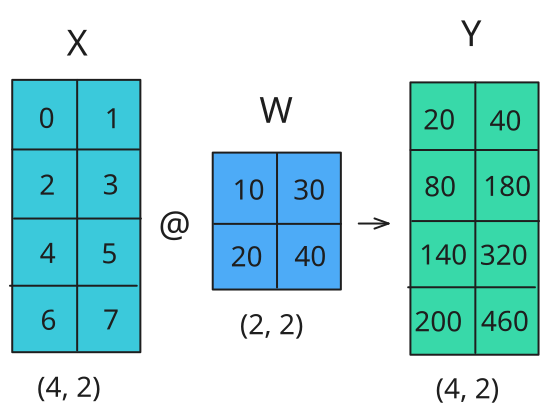
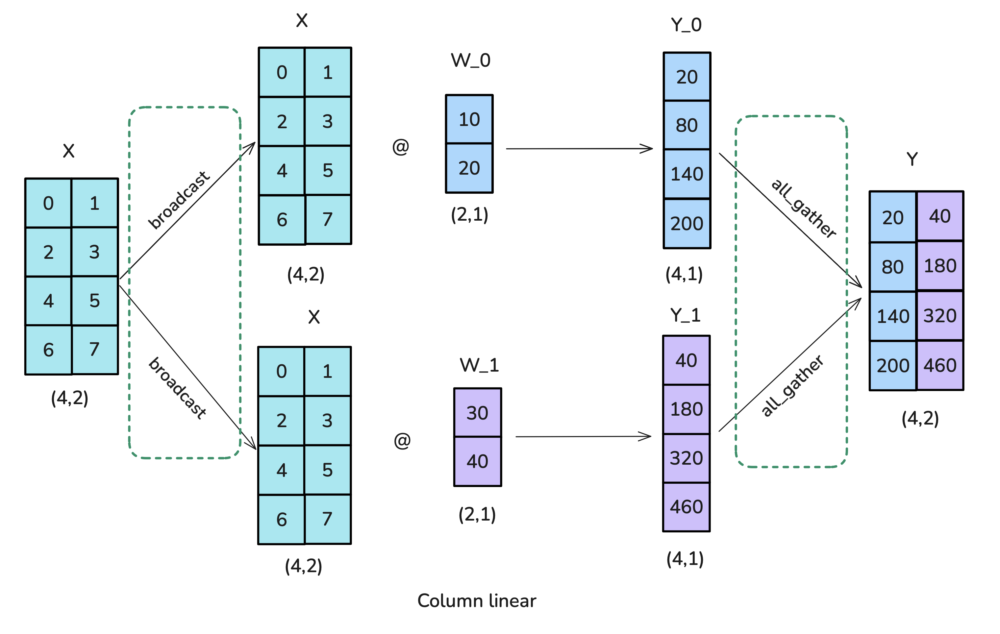
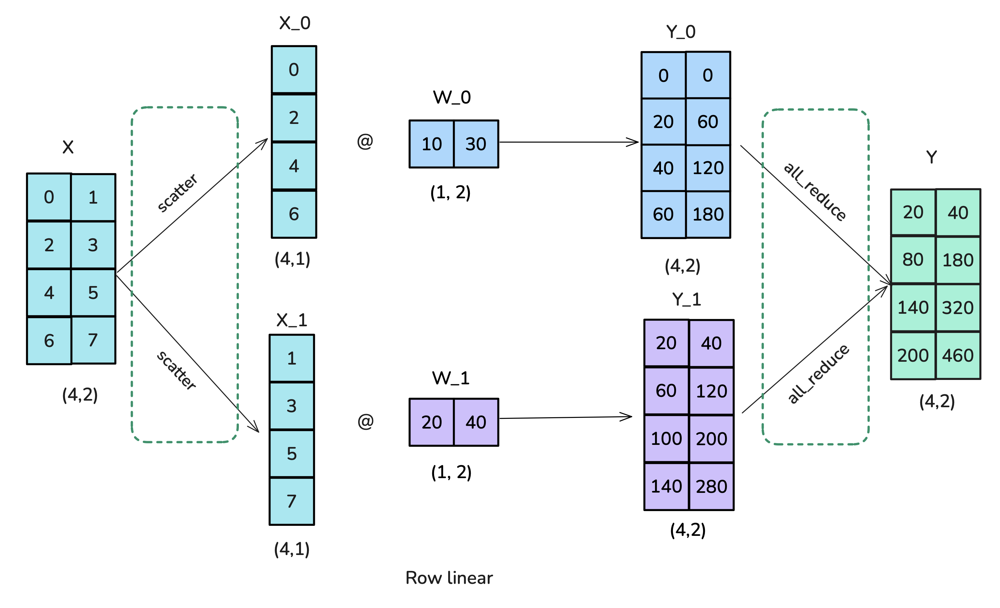
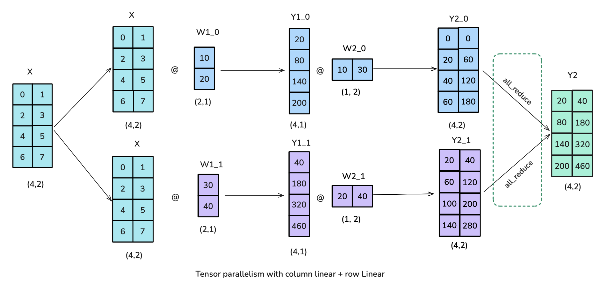
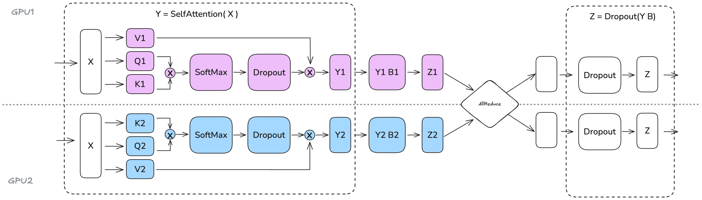
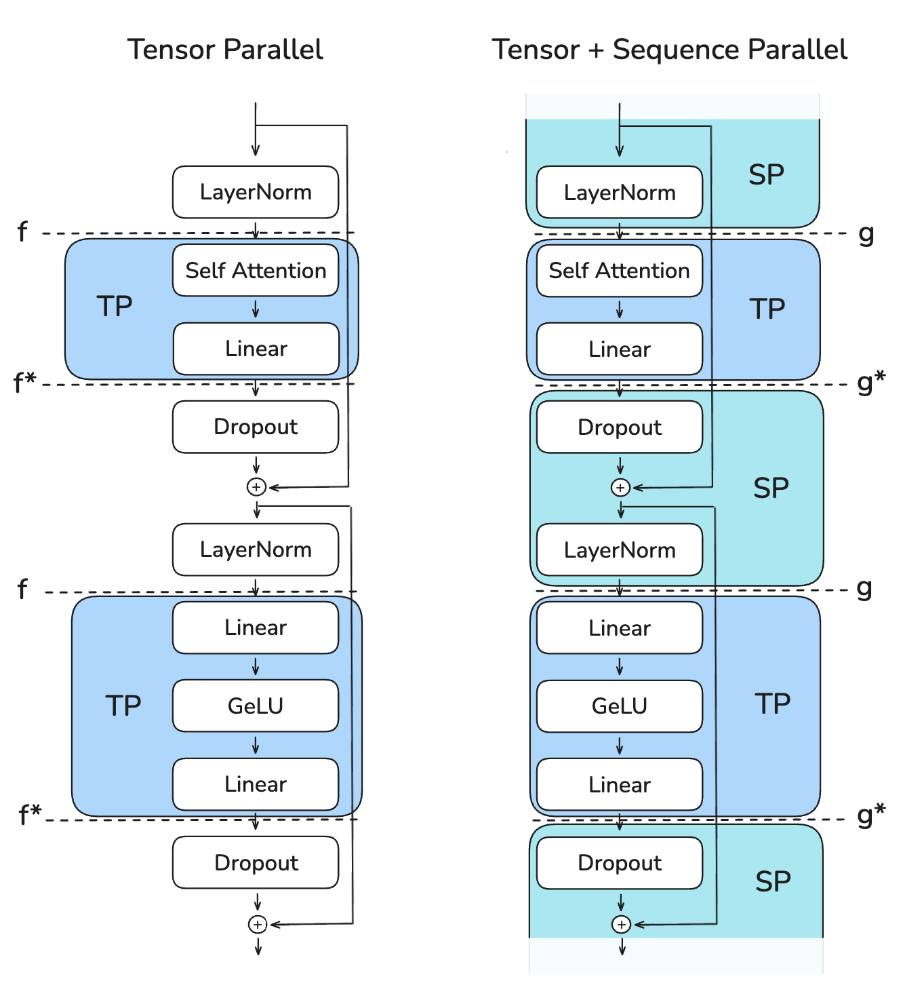
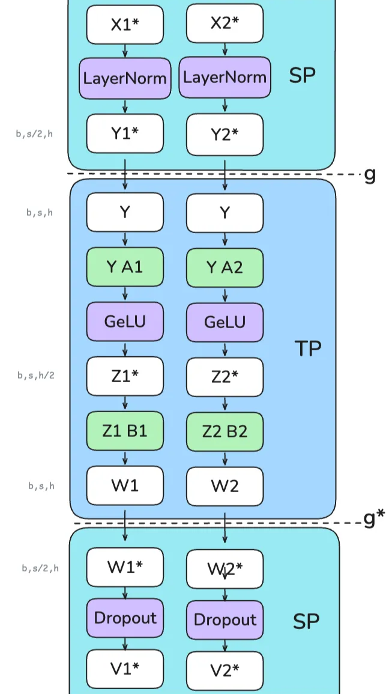

Tensor Parallelism¶
Tensor Parallelism¶
To add a podcast feeling to your reading experience, feel free to listen to the NotebookLM hosts discussing the following sections of this book as you're reading along.
So, we've sharded the model’s parameters, gradients, and optimizer states with ZeRO, but we hit a limit once activation memory overtakes our memory budget. Welcome tensor parallelism (TP), a method that shards weights, gradients, and optimizer states as well as activations - and without the need to gather them all prior to the computation. Seems like a dream! Let’s first have a look at how TP works with simple matrix multiplication (matmul) operations.
Tensor parallelism leverages the mathematical properties of matrix multiplication, \(A \times B\). To understand how it works, let's examine two fundamental equations that make this parallelization possible:
This means that we can compute the matrix product by either multiplying each column of \(B\) individually or multiplying each row individually and combining the results. In a neural network, the matrix multiplication is more often represented in the format \(X \times W\), where:
- \(X\) represents the input or activation values
- \(W\) represents the weight of the Linear layer
In practice, a small example of the operation looks like this:

Let’s see how we can parallelize this operation! In tensor parallelism, tensors are split into \(N\) shards along a particular dimension and distributed across \(N\) GPUs. Matrices can be split on either columns or rows, leading to row or column parallelism. As we’ll see in the following discussion, row and column sharding require different communication primitives.
Our first option is to use column-wise (also called column-linear) sharding: we'll copy the complete input matrices to each worker, requiring an operation called broadcast, and split the weight matrix by columns. The inputs are then multiplied with the partial weight matrices, and finally the results are combined using an all-gather operation.

Here's the code implementation of column-wise tensor parallelism:
👉 Column parallel TP implementation in Picotron (click to expand)
The second option is called row-wise (or row-linear) sharding. As the attentive reader might guess, row-linear means that we split the weight matrix into chunks of rows. However, this also requires us to split the inputs, so we need to use a scatter operation (our fourth distributed communication primitive!) rather than the broadcast operation used in column-linear sharding. The results on each worker are already in the right shape but need to be summed for the final result, so this scenario also requires an all-reduce operation:

Here's the implementation for row-wise tensor parallelism:
👉 Row-parallel TP implementation in Picotron (click to expand)
Now that we have the basic building blocks of TP, let's have a look at how we can effectively combine them inside a transformer layer!
Tensor parallelism in a transformer block¶
To come up with a strategy to follow, let’s move from a toy example to a real model building block. A Transformer model is made of two main building blocks: a feedforward multi-layer perceptron (MLP) block and a multi-head attention (MHA) block. We can apply tensor parallelism to both.
The feedforward part can be parallelized by having a column-linear followed by a row-linear split, which amounts to a broadcast to copy the input and an all-reduce in the forward pass. Note that the broadcast isn’t needed in actual training, where we can make sure inputs are already synced across TP ranks. This setup is more efficient than starting with a row-linear followed by column-linear split, as we can skip the intermediate all-reduce between the split operations.

Now that we've found an efficient schema for the feedforward part of the transformer, let's take a look at the multi-head attention block.
We can generally follow a similar approach here, where the Query (Q), Key (K), and Value (V) matrices are split in a column-parallel fashion and the output projection can be considered a row-linear. With multi-head attention, the column-parallel approach has a very natural interpretation: each GPU computes the attention for an individual or a subset of attention heads. The same approach works as well for multi-query attention (MQA) or grouped query attention (GQA), where keys and values are shared between queries.

We're able to apply tensor parallelism so effectively to both the Attention and MLP blocks because they have dimensions that are naturally independent. The Attention block can be parallelized along the num_attention_heads dimension, as each attention head operates independently. Similarly, the MLP block can be parallelized along the hidden_dim dimension, as operations within the feedforward network are independent along this dimension.
It's worth noting, however, that the tensor parallelism degree should not exceed the number of attention heads because we shard the QKV projection along the num_attention_heads dimension. When using Grouped Query Attention (GQA), we have \(num\_attention\_heads\) query heads but only \(num\_kv\_heads\) key/value heads (with \(num\_attention\_heads >= num\_kv\_heads\)). In this case, we can still set \(TP = num\_attention\_heads\), but we'll need to ensure that the K/V heads stay properly synchronized across GPUs. For instance, Llama-3 8B has 32 query heads but only 8 key/value heads, so while the TP degree could theoretically go up to 32, we would need careful implementation to maintain K/V head synchronization across the tensor-parallel workers.
Note also that tensor parallelism is not a silver bullet for training. We’ve added several distributed communication primitives directly in the computation path of our model, which are therefore hard to fully hide/overlap with computation (like we did in ZeRO), so our final performance will be the result of a trade-off between the computation and memory gains and the added communication overhead. Let's illustrate this:
Looking at the timeline of operations in tensor-parallel MLP (the same applies for MHA), we can better understand the trade-offs involved. In the forward pass of each decoder layer, we hit a synchronization point with the all-reduce operation that cannot be overlapped with computation. This exposed communication overhead is necessary to combine partial results across tensor-parallel ranks before the final LayerNorm can be applied.
Tensor parallelism does help reduce activation memory for the matrix multiplications since the intermediate activations are sharded across GPUs. However, we still need to gather the full activations for operations like LayerNorm, which means we're not getting the full memory benefits we could. Additionally, TP introduces significant communication requirements that heavily depend on the network infrastructure. The inability to fully hide this particular all-reduce behind computation means it directly adds to the critical path of forward propagation, where the critical path refers to the sequence of operations that determine the minimum time required to complete the forward pass.
Let's take a better look at the trade-off as we scale the TP degree:
Open full interactive visualization: Tp Scaling
While increasing TP leads to reduced per-GPU throughput (left), it enables processing of larger batch sizes (right), illustrating the trade-off between computational efficiency and memory availability in distributed training.
In practice, as we see in the lefthand plot above, the communication overhead of tensor parallelism becomes particularly noticeable as we scale beyond 8 GPUs. While tensor parallelism within a single node can leverage fast NVLink interconnects, going across nodes requires slower network connections. We observe significant drops when moving from TP=8 to TP=16, and an even steeper decline from TP=16 to TP=32. At higher degrees of parallelism, the communication overhead becomes so high that it quickly dominates the computation time.
This being said, tensor parallelism provides important benefits for memory usage by distributing model parameters, gradients, optimizer states, and activations (to some extent) across GPUs. Let's examine this effect on a 70B parameter model:
Open full interactive visualization: Tp Memoryusage
Increasing tensor parallelism reduces the memory needed for model parameters, gradients, and optimizer states on each GPU to the point where we can start fitting a larger model onto a single node of 8 GPUs.
Is there a way to get even more benefits from this technique? Layer normalization and dropout still require gathering the full activations on each GPU, partially negating the memory savings. We can do better by finding ways to parallelize these remaining operations as well.
📝 Note
One interesting note about layer normalization in tensor-parallel training is that since each TP rank sees the same activations after the all-gather, the LayerNorm weights don't actually require an all-reduce to sync their gradients after the backward pass. They naturally stay in sync across ranks. However, for dropout operations, we must make sure to sync the random seed across TP ranks to maintain deterministic behavior.
Next, we'll explore a small, natural extension to tensor parallelism called sequence parallelism that does exactly that.
Sequence parallelism¶
Sequence parallelism (SP) involves splitting the activations and computations for the parts of the model not handled by tensor parallelism, such as dropout and LayerNorm, but along the input sequence dimension rather than the hidden dimension.
📝 Note
The term sequence parallelism is a bit overloaded. The sequence parallelism discussed in this section is tightly coupled to tensor parallelism and applies to dropout and layer normalization operations. However, when we move to longer sequences, the attention computation will become a bottleneck, which calls for techniques such as Ring Attention. These are sometimes also referred to as sequence parallelism approaches, but we’ll refer to them as context parallelism instead to differentiate the two approaches. So, when you see "sequence parallelism" in this book, remember that it is used together with tensor parallelism (in contrast to context parallelism, which can be used independently).
This is needed because these operations require access to the full hidden dimension to compute correctly. For example, LayerNorm needs the full hidden dimension to compute mean and variance:
where \(\mu = \text{mean}(x)\) and \(\sigma^2 = \text{var}(x)\) are computed across hidden dimension \(h\).
Consequently, even though these operations are computationally cheap, they still require significant activation memory. Sequence parallelism allows us to shard this memory burden across GPUs by splitting along the sequence dimension instead.
The following diagram shows how we transition between tensor-parallel and sequence-parallel regions using different collective operations (labeled f and g). In practice, we’ll go from the left to the right:

The key challenge is managing these transitions efficiently while keeping memory usage low and maintaining correctness.
In tensor parallelism, in the forward pass:
- f is a no-op (no operation) because activations are already duplicated across ranks.
- f* is an all-reduce to synchronize activations and ensure correctness.
And in the backward pass:
- f* is a no-op because gradients are already duplicated across ranks.
- f is an all-reduce to synchronize gradients.
These f and f operations are called conjugate pairs* because they complement each other - in each pass, when one is a no-op the other is an all-reduce, and it's the opposite in the other pass.
For sequence parallelism, we use different operations labeled g and g*. Specifically, we avoid using all-reduce in the SP regions since that would require gathering the full activations and increase our peak memory usage, defeating the purpose of SP.
So what is actually happening here? As a famous LLM would say, let’s take it step by step:
Initial LayerNorm layer (SP region)
- Input tensors X1 and X2** \((b,s/2,h)\) enter, already split across the sequence dimension.
- Each GPU computes LayerNorm independently on its sequence chunk, giving Y1 and Y2**.
First transition (SP → TP)
- g operation (all-gather) combines Y1 and Y2 back to full sequence length.
- Restores Y \((b,s,h)\) since column-linear layers need the full hidden dimension \(h\).
First linear layer (TP region)
- A1 and A2 are column-linear layers, so they split Y along the hidden dimension.
- GELU is applied independently on each GPU.
- Z1 and Z2** are \((b,s,h/2)\).
Second linear layer (TP region)
- B1 and B2 are row-linear layers, so they restore the hidden dimension.
- W1 and W2 are \((b,s,h)\) that need to be summed together.
Final transition (TP → SP)
- g* operation (reduce-scatter) reduces for previous row-linear correctness while scattering along the sequence dimension.
- W1 and W2** are \((b,s/2,h)\).

A key advantage of sequence parallelism is that it reduces the maximum activation size we need to store. With tensor parallelism alone, we had to store activations of shape \((b,s,h)\) at various points. However, with sequence parallelism, the maximum activation size is reduced to \(\frac{b \cdot s \cdot h}{tp}\) since we always either split along the sequence or the hidden dimension.
It’s a bit difficult to keep track of all the parts that are sharded differently in TP and TP+SP - believe us, we find it hard to map as well, so we made this small table to summarize how the activations (a.k.a. hidden_states) shape changes across the hidden dimension \(h\) and sequence dimension \(s\) during a forward pass:
| Region | TP only | TP with SP |
|---|---|---|
| Enter TP (column-linear) | \(h\): sharded (weight_out is sharded) |
|
| \(s\): full | \(h\): sharded (weight_out is sharded) |
|
| \(s\): all-gather to full | ||
| TP region | \(h\): sharded | |
| \(s\): full | \(h\): sharded | |
| \(s\): full | ||
| Exit TP (row-linear) | \(h\): full (weight_out is full + all-reduce for correctness) |
|
| \(s\): full | \(h\): full (weight_out is full + reduce-scatter for correctness) |
|
| \(s\): reduce-scatter to sharded | ||
| SP region | \(h\): full | |
| \(s\): full | \(h\): full | |
| \(s\): sharded |
And for the embedding layer:
| Region | Vanilla TP | TP with SP |
|---|---|---|
| Embedding layer (row-linear, sharded on vocab) | \(h\): full (weight_out is full + all-reduce for correctness) |
|
| \(s\): full | \(h\): full (weight_out is full + reduce-scatter for correctness) |
|
| \(s\): reduce-scatter to sharded |
By using sequence parallelism, we can achieve even greater activation memory savings, allowing us to push our batch size and sequence length further than would be possible with tensor parallelism alone. Let's see what that means for our previous 70B model example:
Open full interactive visualization: Tp Sp Memoryusage
We've again strongly reduced the maximum memory usage per GPU, allowing us to fit sequence lengths of 16k tokens with TP+SP=16 - an improvement over the vanilla TP case! (TP=16 is still a bit large, as we saw in the previous section, but we'll see how we can improve this in the next section.)
One question you may be asking yourself is whether using TP+SP incurs more communication overhead than vanilla TP. Well, yes and no. In the forward pass with vanilla TP we had two all-reduce operations per transformer block, and in SP we have two all-gather and two reduce-scatter operations per transformer block. So, SP does twice the number of communication operations as TP. But since an all-reduce operation can be broken down into an all-gather and a reduce-scatter (see the "Ring AllReduce" section in the appendix), they’re actually equivalent in terms of communication cost. The same reasoning applies for the backward pass, as we just use the conjugate of each operation (no-op ↔ allreduce and allgather ↔ reducescatter).
If you’ve been paying close attention, you’ll notice that we’re talking about four communication operations in each layer (two for attention and two for MLP). This is what the MLP profiling looks like when using TP+SP:
Just like vanilla TP, TP+SP can’t easily be overlapped with compute, which makes throughput heavily dependent on the communication bandwidth. Here again, like vanilla TP, TP+SP is usually done only within a node (keeping the TP degree under the number of GPUs per node; e.g., TP≤8).
We can benchmark how this communication overhead becomes increasingly problematic as we scale up tensor parallelism. Let’s measure the throughput and memory utilization as we scale TP with SP for a 3B parameter model with a sequence length of 4,096:
Open full interactive visualization: Tp Sp Scaling
Again, there's a trade-off between computational efficiency (left) and memory capacity (right). While higher degrees of parallelism enable processing of significantly larger batch sizes by reducing the activation memory, they also reduce per-GPU throughput, in particular above a threshold corresponding to the number of GPUs per node.
Let’s summarize our observations:
- For both methods, we notice the biggest performance drop when we move from TP=8 to TP=16, because that’s when we move from only communicating within a single node (NVLink) to communicating between nodes (EFA).
- The activation memory savings when using TP with SP help us fit far bigger batches than with TP alone.
We've seen how TP helps us shard activations across several GPUs by splitting the attention and feedforward operations along the hidden dimension and how SP is a natural complement for the remaining operations by splitting along the sequence dimension.
📝 Note
Since LayerNorm layers in the SP region operate on different portions of the sequence, their gradients will differ across TP ranks. To ensure the weights stay synchronized, we need to all-reduce their gradients during the backward pass, similar to how DP ensures weights stay in sync. This is, however, a small communication overhead since LayerNorm has relatively few parameters.
Still, there are two limits to TP+SP: if we scale the sequence length the activation memory will still blow up in the TP region, and if the model is too big to fit with TP=8 we will see a massive slowdown due to the inter-node connectivity.
We can tackle the first problem with context parallelism and the second problem with pipeline parallelism. Let’s first have a look at context parallelism!